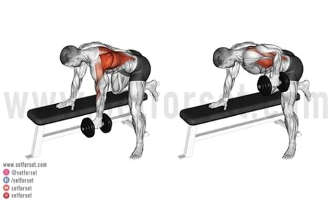

Activities that engage the muscles in the upper back
FACE PULLS
HOW TO PERFORM
Adjust a cable machine so the handle is about even with your eyes (slightly higher is fine). Attach a double ended rope.
Grab the rope with both hands, palms neutral, thumbs against the handle stopper.
Pull the rope toward your face – perform a row type movement but rotate your forearms upward at the elbow. You’re doing this right if the handles split and the clip approaches your nose/eyes.
Squeeze the shoulder blades inward and pause. Return to the start and repeat.
DB ROW

STARTING POSITION
Secure a flat bench and a medium weight dumbbell.
PERFORMANCE
Approach the bench from one side and plant your knee and hand on the bench (non-working side), bent over at the hip.
Pick up the weight and keep your arm straight – pull the weight upward along your body to form a 90-degree angle at the elbow.
You should be pushing the shoulder blade inward toward the center back.
Pause when the upper arm is parallel to the floor. Return to the start and repeat.